CODING AGENTS AS PIXEL WORLD MODELS
traex/DeepSeek-V4.1-Flash · phygen_150
点击播放 · 原生 RGB 像素
逐轮保存的候选
回放视频、检查图与代码变化。
每份候选均可单独播放。实际图片检查记录在下方工具轨迹中。
候选 01播放与检查图
点击播放 · 原生 RGB 像素

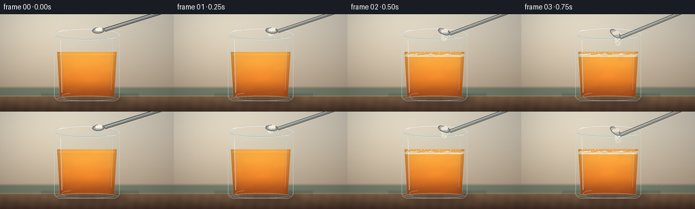
展开代码变化
--- 上一保存版本
+++ 本次保存版本
@@ -0,0 +1,495 @@
+from __future__ import annotations
+
+import math
+from pathlib import Path
+
+import numpy as np
+from PIL import Image, ImageDraw, ImageFilter
+
+import artifact_io
+
+
+CASE_DIR = Path(__file__).resolve().parent
+WIDTH, HEIGHT = 256, 144
+FRAME_COUNT = 20
+FPS = 4
+SS = 4
+RW, RH = WIDTH * SS, HEIGHT * SS
+RNG = np.random.default_rng(150)
+
+
+def clamp(value: float | np.ndarray, low: float = 0.0, high: float = 1.0):
+ return np.clip(value, low, high)
+
+
+def smoothstep(edge0: float, edge1: float, value: float) -> float:
+ t = clamp((value - edge0) / (edge1 - edge0))
+ return t * t * (3.0 - 2.0 * t)
+
+
+def mix(a: np.ndarray | tuple[float, float, float],
+ b: np.ndarray | tuple[float, float, float],
+ amount: float | np.ndarray) -> np.ndarray:
+ return np.asarray(a, dtype=np.float32) * (1.0 - amount) + np.asarray(b, dtype=np.float32) * amount
+
+
+def scaled_points(points: list[tuple[float, float]]) -> list[tuple[int, int]]:
+ return [(round(x * SS), round(y * SS)) for x, y in points]
+
+
+def scaled_box(box: tuple[float, float, float, float]) -> tuple[int, int, int, int]:
+ return tuple(round(value * SS) for value in box)
+
+
+def ellipse_points(cx: float, cy: float, rx: float, ry: float,
+ angle: float = 0.0, count: int = 56) -> list[tuple[float, float]]:
+ ca, sa = math.cos(angle), math.sin(angle)
+ points = []
+ for index in range(count):
+ theta = math.tau * index / count
+ x, y = rx * math.cos(theta), ry * math.sin(theta)
+ points.append((cx + x * ca - y * sa, cy + x * sa + y * ca))
+ return points
+
+
+def cup_edges(y: float) -> tuple[float, float]:
+ t = clamp((y - 28.0) / 99.0)
+ return 80.0 + 6.0 * t, 176.0 - 6.0 * t
+
+
+def liquid_surface(frame: int) -> float:
+ # The visible liquid level settles very slightly as carbon dioxide escapes.
+ return 60.0 + 0.10 * frame
+
+
+def foam_height(frame: int) -> float:
+ values = np.array([
+ 0.0, 0.0, 0.3, 0.8, 1.8, 3.2, 5.2, 7.8, 10.8, 13.8,
+ 17.0, 20.0, 22.7, 25.1, 27.0, 28.6, 29.6, 29.2, 27.8, 25.8,
+ ])
+ return float(values[frame])
+
+
+def turbidity(frame: int) -> float:
+ return 0.055 + 0.29 * smoothstep(2.0, 13.0, frame) + 0.05 * smoothstep(14.0, 19.0, frame)
+
+
+def make_background() -> Image.Image:
+ yy, xx = np.indices((RH, RW), dtype=np.float32) / SS
+ wall_t = np.clip(yy / 122.0, 0.0, 1.0)
+ top = np.array([222.0, 216.0, 201.0], dtype=np.float32)
+ bottom = np.array([177.0, 157.0, 133.0], dtype=np.float32)
+ image = top[None, None, :] * (1.0 - wall_t[..., None]) + bottom[None, None, :] * wall_t[..., None]
+
+ # Broad window light from the upper left.
+ light = np.exp(-(((xx - 52.0) / 102.0) ** 2 + ((yy - 22.0) / 91.0) ** 2))
+ image += light[..., None] * np.array([24.0, 22.0, 17.0])
+
+ # A restrained sage cloth edge gives the warm glass a complementary surround.
+ cloth = (yy > 106.0) & (yy < 124.0)
+ cloth_fade = np.clip((yy - 106.0) / 4.0, 0.0, 1.0) * np.clip((124.0 - yy) / 4.0, 0.0, 1.0)
+ cloth_color = np.array([92.0, 111.0, 95.0], dtype=np.float32)
+ image = image * (1.0 - 0.72 * cloth_fade[..., None]) + cloth_color * (0.72 * cloth_fade[..., None])
+
+ counter = yy >= 121.0
+ counter_t = np.clip((yy - 121.0) / 23.0, 0.0, 1.0)
+ counter_top = np.array([132.0, 102.0, 76.0], dtype=np.float32)
+ counter_bottom = np.array([66.0, 47.0, 37.0], dtype=np.float32)
+ counter_color = counter_top[None, None, :] * (1.0 - counter_t[..., None]) + counter_bottom[None, None, :] * counter_t[..., None]
+ grain = 3.0 * np.sin(xx * 0.39 + yy * 0.06) + 2.0 * np.sin(xx * 0.14 - yy * 0.31)
+ counter_color += grain[..., None] * np.array([0.75, 0.58, 0.46])
+ image[counter] = counter_color[counter]
+
+ # Narrow lit counter edge and soft wall contact shadow.
+ edge = np.exp(-((yy - 121.0) / 0.75) ** 2)
+ image += edge[..., None] * np.array([31.0, 25.0, 18.0])
+ contact = np.exp(-((yy - 119.5) / 2.8) ** 2) * (xx > 60) * (xx < 205)
+ image -= contact[..., None] * np.array([17.0, 14.0, 11.0])
+
+ # Fine photographic grain; low amplitude at the final resolution.
+ noise = RNG.normal(0.0, 1.8, (RH, RW, 1))
+ image += noise
+ return Image.fromarray(np.clip(image, 0, 255).astype(np.uint8), "RGB")
+
+
+def add_cast_shadow(canvas: Image.Image, frame: int) -> Image.Image:
+ overlay = Image.new("RGBA", (RW, RH), (0, 0, 0, 0))
+ draw = ImageDraw.Draw(overlay)
+ sway = math.sin(frame * 0.23) * 0.35
+ draw.ellipse(scaled_box((91 + sway, 119.0, 184 + sway, 133.0)), fill=(53, 34, 24, 92))
+ draw.ellipse(scaled_box((86 + sway, 122.0, 174 + sway, 130.0)), fill=(42, 27, 19, 92))
+ overlay = overlay.filter(ImageFilter.GaussianBlur(4.0 * SS))
+ return Image.alpha_composite(canvas.convert("RGBA"), overlay).convert("RGB")
+
+
+def render_liquid(canvas: Image.Image, frame: int) -> Image.Image:
+ yy, xx = np.indices((RH, RW), dtype=np.float32) / SS
+ surface = liquid_surface(frame)
+ t = np.clip((yy - surface) / (121.5 - surface), 0.0, 1.0)
+ left = 80.0 + 6.0 * np.clip((yy - 28.0) / 99.0, 0.0, 1.0)
+ right = 176.0 - 6.0 * np.clip((yy - 28.0) / 99.0, 0.0, 1.0)
+ liquid_mask = (yy >= surface - 4.3) & (yy <= 122.0) & (xx >= left + 2.3) & (xx <= right - 2.3)
+
+ top_color = np.array([247.0, 158.0, 48.0], dtype=np.float32)
+ mid_color = np.array([229.0, 112.0, 20.0], dtype=np.float32)
+ bottom_color = np.array([157.0, 58.0, 8.0], dtype=np.float32)
+ lower_mix = smoothstep(0.0, 0.72, t)
+ color = top_color[None, None, :] * (1.0 - lower_mix[..., None]) + mid_color[None, None, :] * lower_mix[..., None]
+ deep = smoothstep(0.55, 1.0, t)
+ color = color * (1.0 - deep[..., None]) + bottom_color[None, None, :] * deep[..., None]
+
+ center_glow = np.exp(-(((xx - 128.0) / 32.0) ** 2 + ((yy - 82.0) / 31.0) ** 2))
+ color += center_glow[..., None] * np.array([18.0, 12.0, 2.0])
+
+ reaction = smoothstep(2.0, 10.0, frame)
+ swirl_phase = frame * 0.72
+ swirl = (
+ np.sin((xx - 128.0) * 0.115 + (yy - surface) * 0.19 + swirl_phase)
+ + 0.55 * np.sin((xx - 128.0) * 0.055 - (yy - surface) * 0.31 - swirl_phase * 0.72)
+ )
+ ribbon = np.clip(swirl, 0.0, 1.0) ** 4
+ color += ribbon[..., None] * np.array([21.0, 12.0, 2.0]) * (0.22 + 0.58 * reaction)
+ cloudy = turbidity(frame)
+ color = color * (1.0 - cloudy) + np.array([226.0, 151.0, 72.0], dtype=np.float32) * cloudy
+
+ # Denser amber toward the glass walls.
+ edge_dist = np.minimum(xx - left, right - xx)
+ edge_shade = 1.0 - smoothstep(2.0, 12.0, edge_dist)
+ color = color * (1.0 - 0.33 * edge_shade[..., None]) + np.array([110.0, 45.0, 8.0]) * (0.33 * edge_shade[..., None])
+
+ # Meniscus catches the overhead light.
+ meniscus = np.exp(-((yy - (surface - 0.7)) / 1.1) ** 2) * (xx > left + 3) * (xx < right - 3)
+ color = color * (1.0 - 0.30 * meniscus[..., None]) + np.array([255.0, 202.0, 104.0]) * (0.30 * meniscus[..., None])
+
+ layer = Image.fromarray(np.clip(color, 0, 255).astype(np.uint8), "RGB")
+ mask = Image.fromarray((liquid_mask.astype(np.uint8) * 255), "L")
+ canvas.paste(layer, (0, 0), mask)
+ return canvas
+
+
+def render_foam(canvas: Image.Image, frame: int) -> Image.Image:
+ height = foam_height(frame)
+ if height < 0.15:
+ return canvas
+
+ yy, xx = np.indices((RH, RW), dtype=np.float32) / SS
+ surface = liquid_surface(frame)
+ left = 80.0 + 6.0 * np.clip((yy - 28.0) / 99.0, 0.0, 1.0)
+ right = 176.0 - 6.0 * np.clip((yy - 28.0) / 99.0, 0.0, 1.0)
+ phase = frame * 0.35
+ ragged = (
+ 0.75 * np.sin(xx * 0.24 + phase)
+ + 0.42 * np.sin(xx * 0.51 - phase * 1.5)
+ + 0.22 * np.sin(xx * 0.91 + 1.4)
+ )
+ top_y = surface - height + ragged
+ mask = (yy >= top_y) & (yy <= surface + 3.0) & (xx >= left + 2.3) & (xx <= right - 2.3)
+
+ depth = np.clip((yy - top_y) / max(height + 3.0, 1.0), 0.0, 1.0)
+ cream = np.array([255.0, 246.0, 222.0], dtype=np.float32)
+ amber_cream = np.array([229.0, 193.0, 139.0], dtype=np.float32)
+ foam_color = cream[None, None, :] * (1.0 - depth[..., None] * 0.55) + amber_cream[None, None, :] * (depth[..., None] * 0.55)
+ side = 1.0 - smoothstep(2.0, 9.0, np.minimum(xx - left, right - xx))
+ foam_color *= 1.0 - 0.20 * side[..., None]
+
+ layer = Image.fromarray(np.clip(foam_color, 0, 255).astype(np.uint8), "RGB")
+ mask_image = Image.fromarray((mask.astype(np.uint8) * 255), "L")
+ canvas.paste(layer, (0, 0), mask_image)
+
+ overlay = Image.new("RGBA", (RW, RH), (0, 0, 0, 0))
+ draw = ImageDraw.Draw(overlay)
+ bubble_count = int(40 + 70 * clamp(height / 29.0))
+ for index in range(bubble_count):
+ rng = np.random.default_rng(4100 + index)
+ bx = rng.uniform(87.0, 169.0)
+ local_height = max(2.0, height)
+ by = surface - rng.uniform(-1.0, local_height + 2.0)
+ if by < 30.5:
+ continue
+ radius = rng.uniform(0.45, 2.25) * (0.88 + 0.14 * math.sin(frame * 0.55 + index))
+ visible = ((index * 5 + frame * 3) % 19) > 1
+ if not visible:
+ continue
+ fill_alpha = int(90 + 55 * clamp(height / 24.0))
+ draw.ellipse(
+ scaled_box((bx - radius, by - radius * 0.78, bx + radius, by + radius * 0.78)),
+ fill=(255, 250, 234, fill_alpha),
+ outline=(190, 145, 91, 115),
+ width=max(1, round(0.55 * SS)),
+ )
+ if radius > 0.95:
+ draw.arc(
+ scaled_box((bx - radius * 0.72, by - radius * 0.61, bx + radius * 0.36, by + radius * 0.22)),
+ 190,
+ 326,
+ fill=(255, 255, 250, 190),
+ width=max(1, round(0.48 * SS)),
+ )
+
+ # Larger popping bubbles break up the foam crown late in the clip.
+ for index in range(7):
+ start = 8 + index
+ if frame < start:
+ continue
+ age = frame - start
+ if age > 6:
+ continue
+ bx = 96.0 + index * 10.6 + math.sin(index * 2.1) * 2.5
+ by = surface - height + 1.3 + 0.9 * math.sin(index + frame * 0.3)
+ radius = 1.8 + 0.35 * age
+ alpha = int(120 * (1.0 - age / 7.0))
+ draw.ellipse(
+ scaled_box((bx - radius, by - radius * 0.78, bx + radius, by + radius * 0.78)),
+ fill=(251, 229, 194, max(0, alpha // 2)),
+ outline=(188, 139, 84, max(0, alpha)),
+ width=max(1, round(0.75 * SS)),
+ )
+
+ # Warm reflected light on the underside of the froth.
+ draw.line(scaled_points([(89, surface + 0.5), (168, surface + 0.5)]),
+ fill=(195, 112, 33, 90), width=max(1, round(0.8 * SS)))
+ overlay = overlay.filter(ImageFilter.GaussianBlur(0.18 * SS))
+ return Image.alpha_composite(canvas.convert("RGBA"), overlay).convert("RGB")
+
+
+def draw_rising_bubbles(canvas: Image.Image, frame: int) -> Image.Image:
+ if frame < 4:
+ return canvas
+ overlay = Image.new("RGBA", (RW, RH), (0, 0, 0, 0))
+ draw = ImageDraw.Draw(overlay)
+ surface = liquid_surface(frame)
+ reaction = smoothstep(3.0, 8.0, frame)
+ count = int(22 + 43 * reaction)
+ for index in range(count):
+ rng = np.random.default_rng(900 + index)
+ bx = rng.uniform(89.0, 167.0)
+ speed = rng.uniform(1.2, 3.1)
+ span = 88.0
+ base = rng.uniform(0.0, span)
+ by = 120.0 - ((base + frame * speed) % span)
+ if by < surface + 3.5:
+ continue
+ radius = rng.uniform(0.28, 1.15)
+ if index < 22:
+ radius *= 0.72
+ alpha = int(45 + 95 * reaction)
+ draw.ellipse(
+ scaled_box((bx - radius, by - radius, bx + radius, by + radius)),
+ fill=(255, 218, 151, alpha // 2),
+ outline=(255, 244, 217, alpha),
+ width=max(1, round(0.38 * SS)),
+ )
+
+ # Bubbles gather around the powder's impact site.
+ if frame < 13:
+ for index in range(18):
+ rng = np.random.default_rng(1800 + index)
+ bx = 141.0 + rng.normal(0.0, 6.0)
+ by = surface + 4.0 + ((index * 7 + frame * 4.2) % 44)
+ radius = rng.uniform(0.55, 1.65)
+ alpha = int(105 * smoothstep(2.0, 6.0, frame) * (1.0 - smoothstep(10.0, 14.0, frame)))
+ draw.ellipse(
+ scaled_box((bx - radius, by - radius, bx + radius, by + radius)),
+ fill=(255, 230, 182, alpha // 3),
+ outline=(255, 248, 226, alpha),
+ width=max(1, round(0.48 * SS)),
+ )
+ return Image.alpha_composite(canvas.convert("RGBA"), overlay).convert("RGB")
+
+
+def draw_glass(canvas: Image.Image, frame: int) -> Image.Image:
+ yy, xx = np.indices((RH, RW), dtype=np.float32) / SS
+ left = 80.0 + 6.0 * np.clip((yy - 28.0) / 99.0, 0.0, 1.0)
+ right = 176.0 - 6.0 * np.clip((yy - 28.0) / 99.0, 0.0, 1.0)
+ inside = (yy >= 30.0) & (yy <= 126.0) & (xx >= left + 1.2) & (xx <= right - 1.2)
+ glass = np.zeros((RH, RW, 3), dtype=np.float32)
+ glass[:] = np.array([195.0, 224.0, 221.0], dtype=np.float32)
+ layer = Image.fromarray(glass.astype(np.uint8), "RGB")
+ mask = Image.fromarray((inside.astype(np.uint8) * 22), "L")
+ canvas.paste(layer, (0, 0), mask)
+
+ overlay = Image.new("RGBA", (RW, RH), (0, 0, 0, 0))
+ draw = ImageDraw.Draw(overlay)
+
+ # Body outline, tapering gently toward the base.
+ outline = [(80, 29), (80, 122), (83, 126), (87, 128), (169, 128), (173, 126), (176, 122), (176, 29)]
+ draw.line(scaled_points(outline), fill=(224, 243, 237, 115), width=max(1, round(0.9 * SS)), joint="curve")
+
+ # Thick base and elliptical rim read as real glass at this scale.
+ draw.ellipse(scaled_box((84.0, 120.4, 172.0, 128.0)), outline=(222, 237, 226, 120),
+ width=max(1, round(0.9 * SS)))
+ draw.ellipse(scaled_box((80.0, 21.5, 176.0, 38.5)), outline=(231, 247, 243, 180),
+ width=max(1, round(1.15 * SS)))
+ draw.arc(scaled_box((80.0, 21.5, 176.0, 38.5)), 194, 346,
+ fill=(255, 255, 249, 225), width=max(1, round(1.35 * SS)))
+ draw.arc(scaled_box((81.0, 22.5, 175.0, 37.5)), 18, 166,
+ fill=(154, 194, 192, 150), width=max(1, round(0.8 * SS)))
+
+ # Long soft window reflection on the left wall and a crisp right edge glint.
+ draw.line(scaled_points([(89.0, 38.0), (91.0, 116.0)]),
+ fill=(255, 255, 250, 120), width=max(1, round(1.4 * SS)))
+ draw.line(scaled_points([(91.2, 43.0), (92.7, 111.0)]),
+ fill=(255, 255, 250, 56), width=max(1, round(0.65 * SS)))
+ draw.line(scaled_points([(166.3, 43.0), (163.8, 112.0)]),
+ fill=(255, 255, 250, 92), width=max(1, round(0.65 * SS)))
+
+ # Small refraction highlights near the rim and base.
+ draw.arc(scaled_box((84.0, 23.4, 102.0, 35.0)), 190, 315,
+ fill=(255, 255, 255, 220), width=max(1, round(1.0 * SS)))
+ draw.arc(scaled_box((154.0, 25.0, 174.0, 36.0)), 35, 145,
+ fill=(239, 253, 249, 165), width=max(1, round(0.8 * SS)))
+ draw.arc(scaled_box((91.0, 116.5, 122.0, 126.0)), 130, 260,
+ fill=(255, 255, 247, 120), width=max(1, round(0.75 * SS)))
+
+ overlay = overlay.filter(ImageFilter.GaussianBlur(0.12 * SS))
+ return Image.alpha_composite(canvas.convert("RGBA"), overlay).convert("RGB")
+
+
+def spoon_state(frame: int) -> tuple[float, float, float, float] | None:
+ states = {
+ 0: (145.0, 23.8, -0.08, 1.0),
+ 1: (144.2, 24.3, 0.10, 1.0),
+ 2: (142.2, 26.2, 0.35, 0.97),
+ 3: (138.4, 29.2, 0.69, 0.84),
+ 4: (150.0, 20.0, 0.88, 0.56),
+ 5: (163.0, 10.5, 0.98, 0.26),
+ }
+ return states.get(frame)
+
+
+def draw_powder_and_spoon(canvas: Image.Image, frame: int) -> Image.Image:
+ surface = liquid_surface(frame)
+ overlay = Image.new("RGBA", (RW, RH), (0, 0, 0, 0))
+ draw = ImageDraw.Draw(overlay)
+
+ # Fine falling powder.
+ if 1 <= frame <= 5:
+ for index in range(105):
+ rng = np.random.default_rng(2600 + index)
+ born = 1 + int(rng.uniform(0.0, 3.3))
+ if frame < born:
+ continue
+ age = frame - born
+ sx = 142.0 + rng.normal(0.0, 2.4)
+ sy = 28.0 + rng.uniform(-1.0, 2.0)
+ x = sx + age * rng.normal(0.35, 0.9)
+ y = sy + age * rng.uniform(4.2, 8.2) + rng.uniform(0.0, 3.0)
+ if y > surface + 1.0:
+ continue
+ radius = rng.uniform(0.22, 0.68)
+ alpha = int(190 * (1.0 - 0.10 * age))
+ draw.ellipse(
+ scaled_box((x - radius, y - radius, x + radius, y + radius)),
+ fill=(255, 250, 231, max(45, alpha)),
+ )
+
+ # Soft dust cloud at the impact point.
+ if 2 <= frame <= 8:
+ strength = smoothstep(2.0, 4.0, frame) * (1.0 - smoothstep(6.0, 8.5, frame))
+ cloud = Image.new("RGBA", (RW, RH), (0, 0, 0, 0))
+ cloud_draw = ImageDraw.Draw(cloud)
+ for index in range(15):
+ rng = np.random.default_rng(3100 + index)
+ cx = 140.0 + rng.normal(0.0, 5.5 + 0.6 * frame)
+ cy = surface - 1.2 + rng.normal(0.0, 2.0)
+ radius = rng.uniform(1.5, 4.4)
+ cloud_draw.ellipse(
+ scaled_box((cx - radius, cy - radius * 0.55, cx + radius, cy + radius * 0.55)),
+ fill=(255, 247, 221, int(55 * strength)),
+ )
+ cloud = cloud.filter(ImageFilter.GaussianBlur(1.1 * SS))
+ overlay = Image.alpha_composite(overlay, cloud)
+ draw = ImageDraw.Draw(overlay)
+
+ state = spoon_state(frame)
+ if state is not None:
+ cx, cy, angle, alpha_scale = state
+ alpha_scale = clamp(alpha_scale)
+ # Handle enters from the upper right; layered lines give it a brushed-metal profile.
+ handle_end = (238.0, -3.0)
+ handle_start = (cx + 9.0 * math.cos(angle), cy + 9.0 * math.sin(angle))
+ handle_alpha = int(230 * alpha_scale)
+ draw.line(scaled_points([handle_start, handle_end]), fill=(39, 42, 43, handle_alpha),
+ width=max(1, round(5.6 * SS)))
+ draw.line(scaled_points([handle_start, handle_end]), fill=(132, 138, 137, handle_alpha),
+ width=max(1, round(4.1 * SS)))
+ draw.line(scaled_points([(handle_start[0] - 0.7, handle_start[1] - 0.7),
+ (handle_end[0] - 0.7, handle_end[1] - 0.7)]),
+ fill=(221, 227, 223, int(150 * alpha_scale)),
+ width=max(1, round(1.0 * SS)))
+
+ bowl = ellipse_points(cx, cy, 9.2, 4.5, angle)
+ draw.polygon(scaled_points(bowl), fill=(105, 112, 112, handle_alpha),
+ outline=(38, 42, 43, handle_alpha))
+ inner = ellipse_points(cx - 0.2, cy + 0.2, 7.1, 2.8, angle)
+ draw.polygon(scaled_points(inner), fill=(167, 173, 169, handle_alpha),
+ outline=(218, 223, 218, int(130 * alpha_scale)))
+
+ if frame <= 3:
+ mound_alpha = int(245 * (1.0 - 0.16 * frame) * alpha_scale)
+ for index in range(20):
+ rng = np.random.default_rng(3600 + index)
+ mx = cx - 3.6 + rng.uniform(0.0, 7.0) + 0.5 * math.sin(angle)
+ my = cy - 2.1 + rng.uniform(-1.2, 1.4) + 0.8 * math.sin(angle)
+ radius = rng.uniform(1.0, 2.4)
+ draw.ellipse(
+ scaled_box((mx - radius, my - radius, mx + radius, my + radius)),
+ fill=(255, 251, 236, mound_alpha),
+ )
+ draw.arc(scaled_box((cx - 7.0, cy - 5.3, cx + 7.0, cy + 2.0)),
+ 200, 337, fill=(228, 218, 190, int(120 * alpha_scale)),
+ width=max(1, round(0.7 * SS)))
+
+ return Image.alpha_composite(canvas.convert("RGBA"), overlay).convert("RGB")
+
+
+def post_process(canvas: Image.Image, frame: int) -> Image.Image:
+ array = np.asarray(canvas).astype(np.float32)
+
+ # Gentle highlight bloom around the glass rim and foam.
+ highlights = np.clip(array - 214.0, 0.0, None)
+ bloom_image = Image.fromarray(np.clip(highlights, 0, 255).astype(np.uint8), "RGB")
+ bloom_image = bloom_image.filter(ImageFilter.GaussianBlur(2.4 * SS))
+ bloom = np.asarray(bloom_image).astype(np.float32)
+ array = 255.0 - (255.0 - array) * (255.0 - bloom * 0.17) / 255.0
+
+ yy, xx = np.indices((RH, RW), dtype=np.float32)
+ nx = (xx / RW - 0.5) * 2.0
+ ny = (yy / RH - 0.5) * 2.0
+ vignette = np.clip(1.0 - 0.17 * (nx * nx * 0.72 + ny * ny * 0.48), 0.70, 1.0)
+ array *= vignette[..., None]
+
+ # A very small exposure lift as the reaction fills the frame.
+ array *= 1.0 + 0.012 * frame / (FRAME_COUNT - 1)
+ image = Image.fromarray(np.clip(array, 0, 255).astype(np.uint8), "RGB")
+
+ # Slow push-in toward the cup.
+ zoom = 1.0 + 0.028 * frame / (FRAME_COUNT - 1)
+ crop_w, crop_h = RW / zoom, RH / zoom
+ center_x, center_y = 128.0 * SS, 77.0 * SS
+ left = clamp(center_x - crop_w / 2.0, 0.0, RW - crop_w)
+ top = clamp(center_y - crop_h / 2.0, 0.0, RH - crop_h)
+ image = image.crop((round(left), round(top), round(left + crop_w), round(top + crop_h)))
+ return image.resize((WIDTH, HEIGHT), Image.Resampling.LANCZOS)
+
+
+def render_frame(frame: int) -> np.ndarray:
+ canvas = make_background()
+ canvas = add_cast_shadow(canvas, frame)
+ canvas = render_liquid(canvas, frame)
+ canvas = draw_rising_bubbles(canvas, frame)
+ canvas = render_foam(canvas, frame)
+ canvas = draw_glass(canvas, frame)
+ canvas = draw_powder_and_spoon(canvas, frame)
+ canvas = post_process(canvas, frame)
+ return np.asarray(canvas, dtype=np.uint8)
+
+
+def main() -> None:
+ frames = np.stack([render_frame(index) for index in range(FRAME_COUNT)])
+ artifact_io.save(frames, CASE_DIR)
+ print(f"Saved {len(frames)} frames to {CASE_DIR}")
+
+
+if __name__ == "__main__":
+ main()
候选 02播放与检查图
点击播放 · 原生 RGB 像素

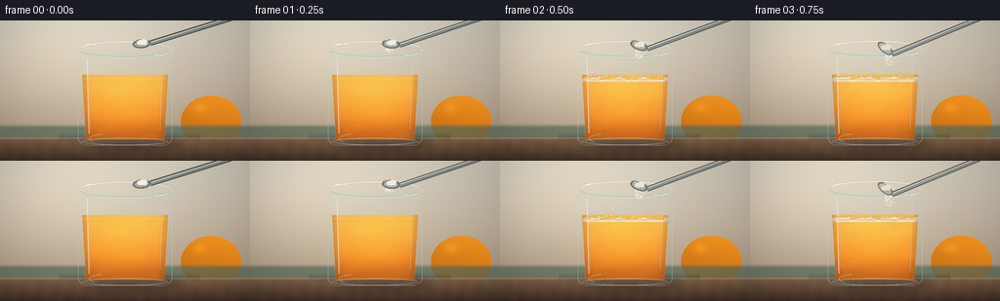
展开代码变化
--- 上一保存版本
+++ 本次保存版本
@@ -85,6 +85,21 @@
light = np.exp(-(((xx - 52.0) / 102.0) ** 2 + ((yy - 22.0) / 91.0) ** 2))
image += light[..., None] * np.array([24.0, 22.0, 17.0])
+ # A soft whole orange behind the cup makes the amber subject immediately legible.
+ orange_mask = ((xx - 216.0) / 31.0) ** 2 + ((yy - 104.0) / 27.0) ** 2 <= 1.0
+ orange_t = np.clip((xx - 185.0) / 62.0, 0.0, 1.0)
+ orange_shade = np.clip((yy - 77.0) / 54.0, 0.0, 1.0)
+ orange_color = (
+ np.array([250.0, 154.0, 32.0], dtype=np.float32)[None, None, :] * (1.0 - orange_shade[..., None] * 0.46)
+ + np.array([178.0, 69.0, 7.0], dtype=np.float32)[None, None, :] * (orange_shade[..., None] * 0.46)
+ )
+ orange_color *= 0.92 + 0.15 * orange_t[..., None]
+ pores = 4.0 * np.sin(xx * 1.31 + yy * 0.82) + 2.5 * np.sin(xx * 2.03 - yy * 1.17)
+ orange_color += pores[..., None] * np.array([0.65, 0.34, 0.04])
+ image[orange_mask] = orange_color[orange_mask]
+ orange_glint = np.exp(-(((xx - 205.0) / 7.5) ** 2 + ((yy - 90.0) / 5.5) ** 2))
+ image += orange_glint[..., None] * np.array([21.0, 15.0, 7.0])
+
# A restrained sage cloth edge gives the warm glass a complementary surround.
cloth = (yy > 106.0) & (yy < 124.0)
cloth_fade = np.clip((yy - 106.0) / 4.0, 0.0, 1.0) * np.clip((124.0 - yy) / 4.0, 0.0, 1.0)
@@ -130,16 +145,16 @@
right = 176.0 - 6.0 * np.clip((yy - 28.0) / 99.0, 0.0, 1.0)
liquid_mask = (yy >= surface - 4.3) & (yy <= 122.0) & (xx >= left + 2.3) & (xx <= right - 2.3)
- top_color = np.array([247.0, 158.0, 48.0], dtype=np.float32)
- mid_color = np.array([229.0, 112.0, 20.0], dtype=np.float32)
- bottom_color = np.array([157.0, 58.0, 8.0], dtype=np.float32)
+ top_color = np.array([255.0, 180.0, 61.0], dtype=np.float32)
+ mid_color = np.array([249.0, 137.0, 25.0], dtype=np.float32)
+ bottom_color = np.array([199.0, 88.0, 8.0], dtype=np.float32)
lower_mix = smoothstep(0.0, 0.72, t)
color = top_color[None, None, :] * (1.0 - lower_mix[..., None]) + mid_color[None, None, :] * lower_mix[..., None]
deep = smoothstep(0.55, 1.0, t)
color = color * (1.0 - deep[..., None]) + bottom_color[None, None, :] * deep[..., None]
center_glow = np.exp(-(((xx - 128.0) / 32.0) ** 2 + ((yy - 82.0) / 31.0) ** 2))
- color += center_glow[..., None] * np.array([18.0, 12.0, 2.0])
+ color += center_glow[..., None] * np.array([27.0, 18.0, 4.0])
reaction = smoothstep(2.0, 10.0, frame)
swirl_phase = frame * 0.72
@@ -148,14 +163,14 @@
+ 0.55 * np.sin((xx - 128.0) * 0.055 - (yy - surface) * 0.31 - swirl_phase * 0.72)
)
ribbon = np.clip(swirl, 0.0, 1.0) ** 4
- color += ribbon[..., None] * np.array([21.0, 12.0, 2.0]) * (0.22 + 0.58 * reaction)
+ color += ribbon[..., None] * np.array([24.0, 15.0, 2.0]) * (0.22 + 0.58 * reaction)
cloudy = turbidity(frame)
- color = color * (1.0 - cloudy) + np.array([226.0, 151.0, 72.0], dtype=np.float32) * cloudy
+ color = color * (1.0 - cloudy) + np.array([244.0, 169.0, 78.0], dtype=np.float32) * cloudy
# Denser amber toward the glass walls.
edge_dist = np.minimum(xx - left, right - xx)
edge_shade = 1.0 - smoothstep(2.0, 12.0, edge_dist)
- color = color * (1.0 - 0.33 * edge_shade[..., None]) + np.array([110.0, 45.0, 8.0]) * (0.33 * edge_shade[..., None])
+ color = color * (1.0 - 0.27 * edge_shade[..., None]) + np.array([137.0, 55.0, 8.0]) * (0.27 * edge_shade[..., None])
# Meniscus catches the overhead light.
meniscus = np.exp(-((yy - (surface - 0.7)) / 1.1) ** 2) * (xx > left + 3) * (xx < right - 3)
@@ -210,12 +225,12 @@
visible = ((index * 5 + frame * 3) % 19) > 1
if not visible:
continue
- fill_alpha = int(90 + 55 * clamp(height / 24.0))
+ fill_alpha = int(72 + 38 * clamp(height / 24.0))
draw.ellipse(
scaled_box((bx - radius, by - radius * 0.78, bx + radius, by + radius * 0.78)),
fill=(255, 250, 234, fill_alpha),
- outline=(190, 145, 91, 115),
- width=max(1, round(0.55 * SS)),
+ outline=(209, 166, 112, 72),
+ width=max(1, round(0.38 * SS)),
)
if radius > 0.95:
draw.arc(
@@ -248,7 +263,7 @@
# Warm reflected light on the underside of the froth.
draw.line(scaled_points([(89, surface + 0.5), (168, surface + 0.5)]),
fill=(195, 112, 33, 90), width=max(1, round(0.8 * SS)))
- overlay = overlay.filter(ImageFilter.GaussianBlur(0.18 * SS))
+ overlay = overlay.filter(ImageFilter.GaussianBlur(0.28 * SS))
return Image.alpha_composite(canvas.convert("RGBA"), overlay).convert("RGB")
@@ -313,13 +328,13 @@
# Body outline, tapering gently toward the base.
outline = [(80, 29), (80, 122), (83, 126), (87, 128), (169, 128), (173, 126), (176, 122), (176, 29)]
- draw.line(scaled_points(outline), fill=(224, 243, 237, 115), width=max(1, round(0.9 * SS)), joint="curve")
+ draw.line(scaled_points(outline), fill=(224, 243, 237, 100), width=max(1, round(0.72 * SS)), joint="curve")
# Thick base and elliptical rim read as real glass at this scale.
draw.ellipse(scaled_box((84.0, 120.4, 172.0, 128.0)), outline=(222, 237, 226, 120),
width=max(1, round(0.9 * SS)))
- draw.ellipse(scaled_box((80.0, 21.5, 176.0, 38.5)), outline=(231, 247, 243, 180),
- width=max(1, round(1.15 * SS)))
+ draw.ellipse(scaled_box((80.0, 21.5, 176.0, 38.5)), outline=(231, 247, 243, 158),
+ width=max(1, round(1.0 * SS)))
draw.arc(scaled_box((80.0, 21.5, 176.0, 38.5)), 194, 346,
fill=(255, 255, 249, 225), width=max(1, round(1.35 * SS)))
draw.arc(scaled_box((81.0, 22.5, 175.0, 37.5)), 18, 166,
候选 03播放与检查图
点击播放 · 原生 RGB 像素
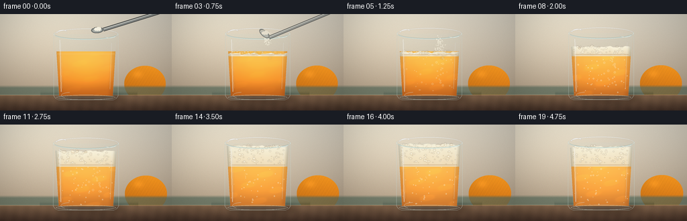
展开代码变化
--- 上一保存版本
+++ 本次保存版本
@@ -336,7 +336,7 @@
draw.ellipse(scaled_box((80.0, 21.5, 176.0, 38.5)), outline=(231, 247, 243, 158),
width=max(1, round(1.0 * SS)))
draw.arc(scaled_box((80.0, 21.5, 176.0, 38.5)), 194, 346,
- fill=(255, 255, 249, 225), width=max(1, round(1.35 * SS)))
+ fill=(255, 255, 249, 205), width=max(1, round(1.12 * SS)))
draw.arc(scaled_box((81.0, 22.5, 175.0, 37.5)), 18, 166,
fill=(154, 194, 192, 150), width=max(1, round(0.8 * SS)))
@@ -363,11 +363,10 @@
def spoon_state(frame: int) -> tuple[float, float, float, float] | None:
states = {
0: (145.0, 23.8, -0.08, 1.0),
- 1: (144.2, 24.3, 0.10, 1.0),
- 2: (142.2, 26.2, 0.35, 0.97),
- 3: (138.4, 29.2, 0.69, 0.84),
- 4: (150.0, 20.0, 0.88, 0.56),
- 5: (163.0, 10.5, 0.98, 0.26),
+ 1: (144.0, 24.7, 0.15, 1.0),
+ 2: (141.2, 27.2, 0.42, 0.96),
+ 3: (138.0, 29.6, 0.72, 0.78),
+ 4: (150.0, 20.0, 0.91, 0.36),
}
return states.get(frame)
@@ -420,8 +419,8 @@
if state is not None:
cx, cy, angle, alpha_scale = state
alpha_scale = clamp(alpha_scale)
- # Handle enters from the upper right; layered lines give it a brushed-metal profile.
- handle_end = (238.0, -3.0)
+ # Handle enters from the upper right; it slides away as the bowl leaves the cup.
+ handle_end = (238.0 + 12.0 * (frame == 4), -3.0 - 8.0 * (frame == 4))
handle_start = (cx + 9.0 * math.cos(angle), cy + 9.0 * math.sin(angle))
handle_alpha = int(230 * alpha_scale)
draw.line(scaled_points([handle_start, handle_end]), fill=(39, 42, 43, handle_alpha),
候选 04播放与检查图
点击播放 · 原生 RGB 像素

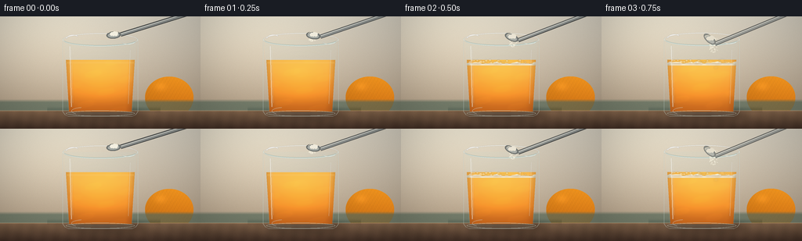
展开代码变化
--- 上一保存版本
+++ 本次保存版本
@@ -366,7 +366,6 @@
1: (144.0, 24.7, 0.15, 1.0),
2: (141.2, 27.2, 0.42, 0.96),
3: (138.0, 29.6, 0.72, 0.78),
- 4: (150.0, 20.0, 0.91, 0.36),
}
return states.get(frame)
@@ -419,8 +418,8 @@
if state is not None:
cx, cy, angle, alpha_scale = state
alpha_scale = clamp(alpha_scale)
- # Handle enters from the upper right; it slides away as the bowl leaves the cup.
- handle_end = (238.0 + 12.0 * (frame == 4), -3.0 - 8.0 * (frame == 4))
+ # Handle enters from the upper right with a brushed-metal profile.
+ handle_end = (238.0, -3.0)
handle_start = (cx + 9.0 * math.cos(angle), cy + 9.0 * math.sin(angle))
handle_alpha = int(230 * alpha_scale)
draw.line(scaled_points([handle_start, handle_end]), fill=(39, 42, 43, handle_alpha),
可观测工具轨迹
实际执行的命令与返回图片。
命令 1exit 0
/bin/bash -c "pwd && rg --files -g 'prompt.txt' -g 'GENERATION_RULES.md' -g 'task_spec.json' -g '"'!**/.git/**'"'"
命令 2exit 0
/bin/bash -c 'git status --short && find . -maxdepth 2 -type f | sort | head -200'
命令 3exit 0
/bin/bash -c 'cat GENERATION_RULES.md'
命令 4exit 0
/bin/bash -c 'cat prompt.txt'
命令 5exit 0
/bin/bash -c 'cat task_spec.json'
命令 6exit 0
/bin/bash -c "sed -n '1,260p' artifact_io.py"
命令 7exit 0
/bin/bash -c "sed -n '1,240p' player_template.html"
命令 8exit 0
/bin/bash -c "python - <<'PY'
import numpy, PIL
print('numpy', numpy.__version__)
print('PIL', PIL.__version__)
PY"命令 9exit 1
/bin/bash -c 'python generate.py'
命令 10exit 0
/bin/bash -c 'python generate.py'
命令 11exit 0
/bin/bash -c 'mkdir -p candidates/v1 && cp inspection.png transition_check.png pixels.npz candidates/v1/ && cp -r frames candidates/v1/ && cp index.html candidates/v1/'
命令 12exit 0
/bin/bash -c "nl -ba generate.py | sed -n '65,125p'"
命令 13exit 0
/bin/bash -c "nl -ba generate.py | sed -n '125,190p'; nl -ba generate.py | sed -n '205,280p'; nl -ba generate.py | sed -n '300,350p'"
命令 14exit 0
/bin/bash -c 'python generate.py'
命令 15exit 0
/bin/bash -c "nl -ba generate.py | sed -n '335,395p'"
命令 16exit 0
/bin/bash -c 'rg -n "handle_end" generate.py'
命令 17exit 0
/bin/bash -c 'python generate.py'
命令 18exit 0
/bin/bash -c 'python generate.py 2>render.log'
命令 19exit 0
/bin/bash -c "python - <<'PY'
from pathlib import Path
import json
import numpy as np
from PIL import Image
root = Path('.')
frames = np.stack([np.asarray(Image.open(p).convert('RGB')) for p in sorted((root/'frames').glob('*.png'))])
with np.load(root/'pixels.npz') as z:
packed = z['pixels']
spec = json.loads((root/'task_spec.json').read_text())
html = (root/'index.html').read_text()
adj = np.abs(frames[1:].astype(np.int16) - frames[:-1].astype(np.int16)).mean(axis=(1,2,3))
print('frame_shape', frames.shape, frames.dtype)
print('pixels_npz_shape', packed.shape, packed.dtype)
print('spec', spec['width'], spec['height'], spec['frames'], spec['fps'], spec['audio'])
print('unique_frames', len({f.tobytes() for f in frames}))
print('adjacent_mae_min_max', round(float(adj.min()), 3), round(float(adj.max()), 3))
print('mean_rgb_start_end', frames[0].mean(axis=(0,1)).round(1).tolist(), frames[-1].mean(axis=(0,1)).round(1).tolist())
print('index_bytes', len(html), 'ready_hook', '__pixelReady' in html)
print('artifact_files', sorted(p.name for p in root.iterdir() if p.is_file()))
assert frames.shape == (20, 144, 256, 3) and frames.dtype == np.uint8
assert packed.shape == (144, 256, 20)
assert len({f.tobytes() for f in frames}) == 20
assert adj.max() < 35
PY"视觉工具实际返回图片 1
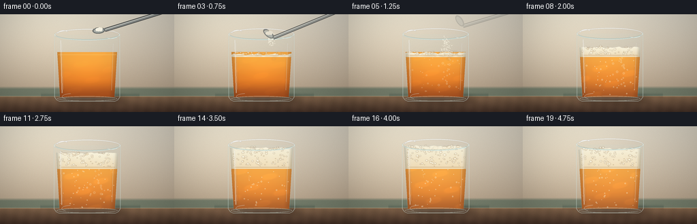
视觉工具实际返回图片 2
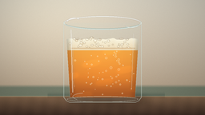
视觉工具实际返回图片 3
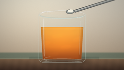
视觉工具实际返回图片 4
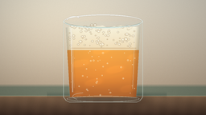
视觉工具实际返回图片 5
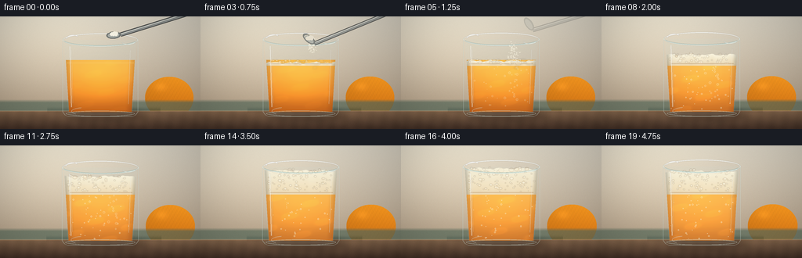
视觉工具实际返回图片 6
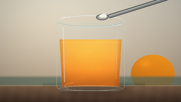
视觉工具实际返回图片 7
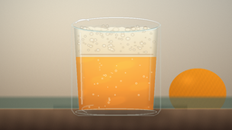
视觉工具实际返回图片 8
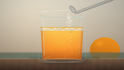
视觉工具实际返回图片 9

视觉工具实际返回图片 10
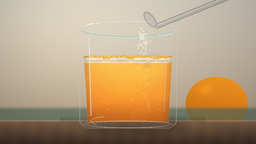
视觉工具实际返回图片 11

保存候选 4 份；完成命令 19 次；可验证图片返回 11 张。原始 API 响应与完整日志保留在本地。